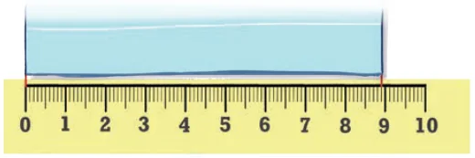
The length of a sheet of paper was \(8 \frac{9}{10}\) units, which can also be said as 8 units and 9 one-tenths. It is folded in half along its length. What is its
We can say that its length is between \(4 \frac{4}{10}\) units and \(4 \frac{5}{10}\) units. But we cannot state its exact measurement, since there are no markings. Earlier, we split a unit into 10 one-tenths to measure smaller lengths. We can do something similar and split each one-tenth into 10 parts.
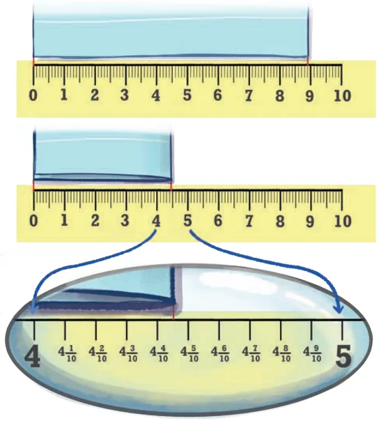
What is the length of this smaller part? How many such smaller parts make a unit length? As shown in the figure below, each one-tenth has 10 smaller parts, and there are 10 one-tenths in a unit; therefore, there will be 100 smaller parts in a unit. Therefore, one part’s length will
be \(\frac{1}{100}\) of a unit.
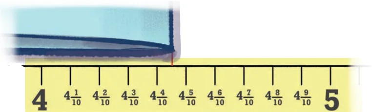
Returning to our question, what is the length of the folded paper? We can see that it ends at \(4 \frac{4}{10} 5100\), read as 4 units and 4 one-tenths and 5 one-hundredths.
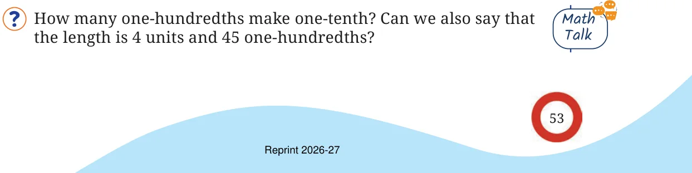
Observe the figure below. Notice the markings and the corresponding lengths written in the boxes when measured from 0. Fill the lengths in the empty boxes.
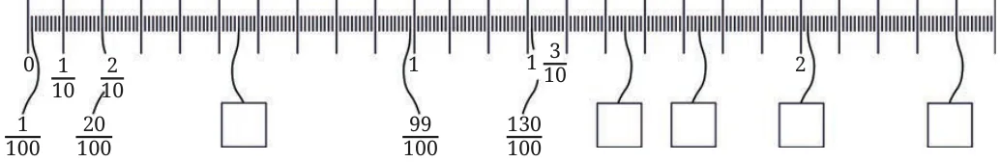
The length of the wire in the first picture is given in three different ways. Can you see how they denote the same length?
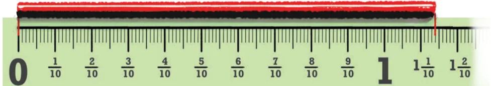
\(1 \frac{1}{10} 4100\) One and one-tenth and four-hundredths \(1 \frac{14}{100}\) One and fourteen-hundredths \(\frac{114}{100}\) One Hundred and Fourteen-hundredths For the lengths shown below write the measurements and read out the measures in words.
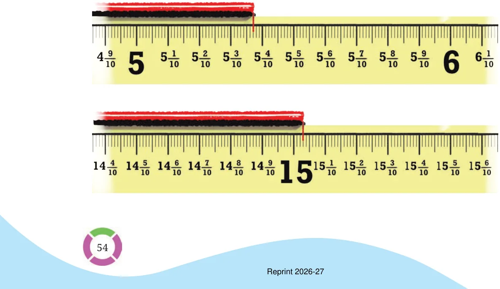
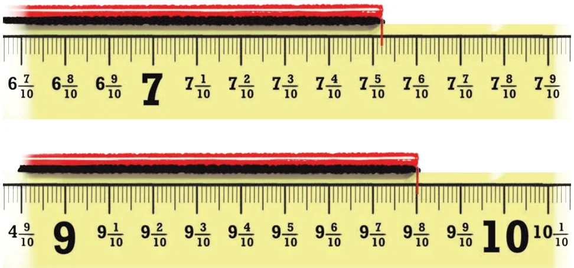
In each group, identify the longest and the shortest lengths. Mark each length on the scale.
\(\frac{3}{10}\) , 3 , 33
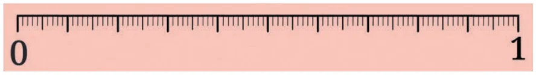
\(\frac{1}{10}\) , 30 , \(1 \frac{3}{10}\)
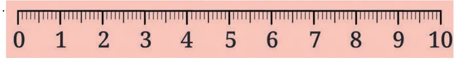
\(\frac{45}{100}\) , 54 , 5 , 4
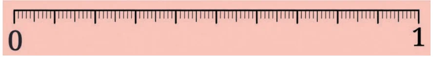
\(\frac{6}{10}\) , 3 6 , 3 6
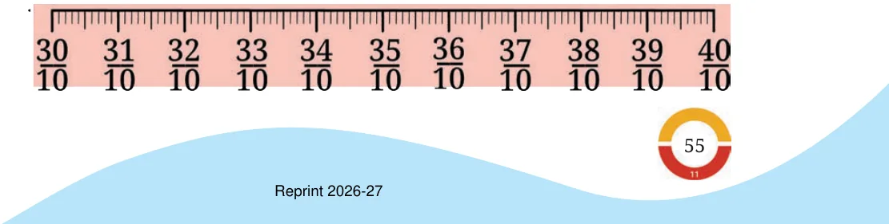
\(\frac{8}{10}\) , 9 , 1 8
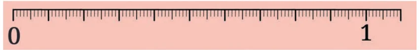
\(\frac{3}{10}\) , 7 5 , 7 41
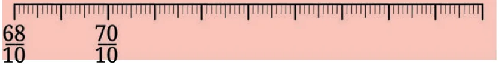
\(\frac{65}{10}\) , 5 87 , 5 7
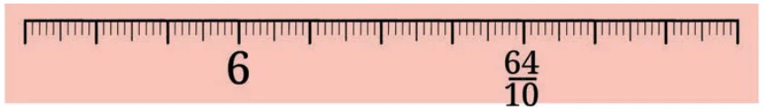
What will be the sum of \(15 \frac{3}{10}\) and 2 6 ? This can be solved in different ways. Some are shown below.
- (a)Method 1
\((15 + 2) +\) ( \(\frac{3}{10} + 610) +\) ( \(\frac{4}{100} + 8\) ) \(= 17 + \frac{9}{10} + 12 = 17 + \frac{9}{10} + 1 \frac{100}{10} + 2100 = 17 + \frac{10}{10} + 2100 = 18 \frac{2}{100}\) .
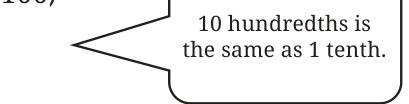
- (b)Method \(2 \frac{3}{10}\)
\(+ \frac{6}{10} \frac{100}{100} = \frac{9}{10} = \frac{10}{10} \frac{100}{100}\)
Are both these methods different?
Observe the addition done below for \(483 + 268\). Do you see any similarities between the methods shown above?
\((400 + 80 + 3) + (200 + 60 + 8) = (400 + 200) + (80 + 60) + (3 + 8) = 600 + 140 + 11 = 600 + 150 + 1 = 700 + 50 + 1 = 751\)
hundredths, as follows. One can also find the sum \(15 \frac{3}{10} 4100 + 2 610 8100\) by converting to
- (c)\((15 + 2) +\) ( \(\frac{34}{100} + 68100)\)
\(= 17 + \frac{102}{100} = 17 + 1 + \frac{2}{100} = 18 \frac{2}{100}\)
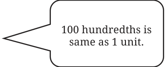
- (d)( \(\frac{1534}{100}\) ) + ( \(\frac{268}{100}\) )
\(= \frac{1802}{100} = \frac{1800}{100} + 2100 = 18 \frac{2}{100}\)
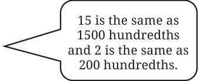
What is the difference: \(25 \frac{9}{10} - 6 410 7100\) ? One way to solve this is as follows:
\(\frac{9}{10} \frac{8}{10} \frac{8}{10} - 6 \frac{4}{10} - 6 \frac{4}{10} \frac{100}{100} - 6 \frac{4}{10} \frac{100}{100}\)
\(= 19 \frac{4}{10}\)
Solve this by converting to hundredths. What is the difference \(15 \frac{3}{10} 4100 - 2 610 8100\) ?
One way to solve this is as follows:
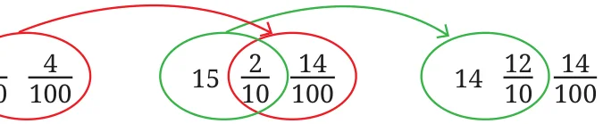
\(- 2 \frac{6}{10} - 2 \frac{6}{10} - 2 \frac{6}{10}\)
\(= 12 \frac{6}{10}\)
Observe the subtraction done below for \(653 - 268\). Do you see any similarities with the methods shown above?
\((600 + 50 + 3) - (200 + 60 + 8) = (600 - 200) + (50 - 60) + (3 - 8) = (600 - 200) + (40 - 60) + (13 - 8) = (600 - 200) + (40 - 60) + 5 = (500 - 200) + (140 - 60) + 5 = 300 + 80 + 5 = 385\)